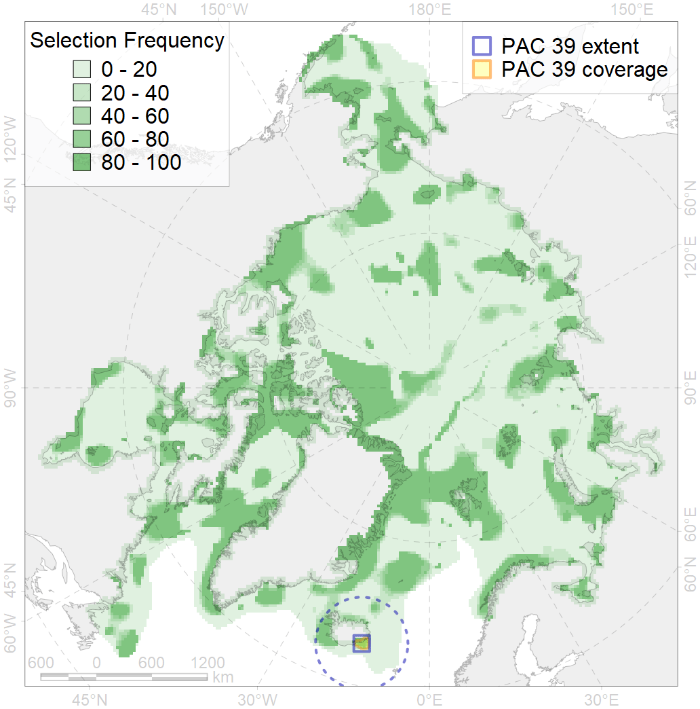
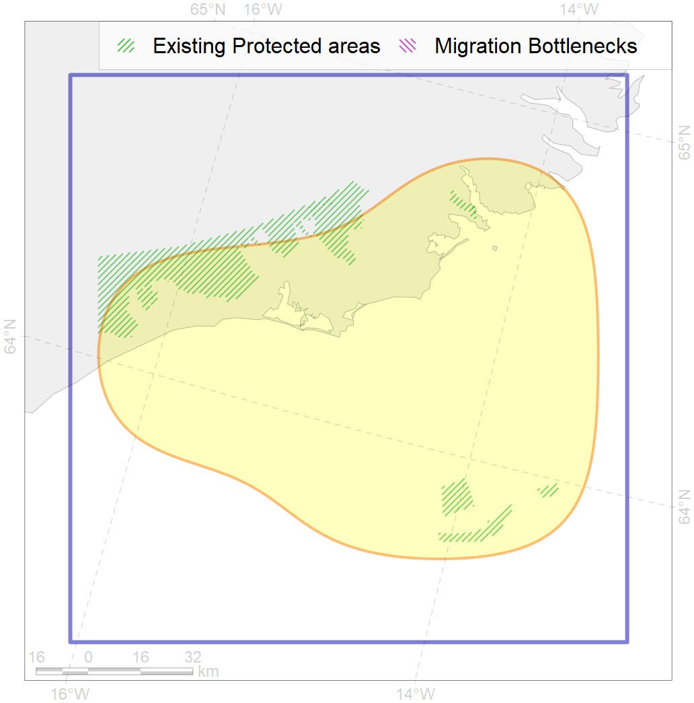

39
For more information regarding this PAC and to conduct custom spatial analysis using the PAC data or any spatial query, please consult Accenter.

0
CFs entirely within the PAC area
0
CFs at least 25% within the PAC area
1
CFs with at least 50% of their target achieved in the PAC
3
CFs with at least half of their target achieved in the PAC
| CF ID | CF Name | Proportion in the PAC | Conservation Target | Contribution to ArcNet Target Achievement | PAC’s Contribution to the Achieved Target |
|---|---|---|---|---|---|
| 6057 | Common eider (Somateria mollissima borealis) Spitsbergen wintering grounds | 21.1% | 55.2% | 37.4% | 36.6% |
| 7212 | V.2.1. South Iceland shelf and glacial troughs | 13.2% | 11.2% | 104.3% | 19.8% |
| 7054 | cold corals of Iceland and East Greenland | 10.5% | 50.0% | 16.9% | 16.4% |
| 6086 | Long-tailed duck (Clangula hyemalis) Iceland moulting&migration stopovers | 9.2% | 52.8% | 15.8% | 15.5% |
| 6054 | Common eider (Somateria mollissima borealis) Iceland wintering grounds | 8.0% | 55.2% | 14.0% | 13.3% |
| 4082 | Fish zoogeography, Atlantic Boreal Region, low-boreal district of the Eastern Atlantic subregion | 6.2% | 6.7% | 79.2% | 19.2% |
| 6075 | Common murre (Uria aalge aalge) breeding grounds | 4.6% | 54.0% | 8.1% | 7.7% |
| 5055 | Harbour porpoise feeding areas in Iceland | 4.6% | 6.0% | 67.1% | 10.6% |
| 7029 | Iceland region | 4.2% | 14.9% | 25.1% | 11.3% |
| 5098 | White-beaked dolphin feeding area in the Central North Atlantic | 4.1% | 12.0% | 28.5% | 9.4% |
| 6060 | Common eider (Somateria mollissima borealis) Iceland breeding&moulting grounds | 3.6% | 55.2% | 6.2% | 5.9% |
| 5066 | Minke whale feeding areas in the Central Atlantic | 2.9% | 12.0% | 20.8% | 6.2% |
| 4068 | Migration area of European Eel (Anguilla anguilla) | 2.7% | 24.0% | 9.6% | 5.3% |
| 7213 | V.2.2. South Iceland slope | 2.0% | 13.9% | 9.6% | 7.0% |